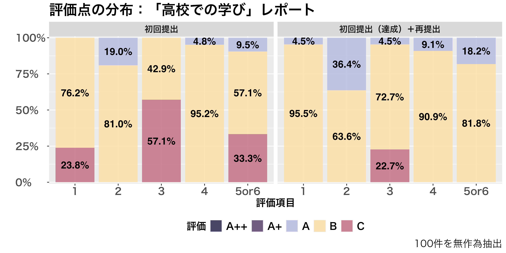
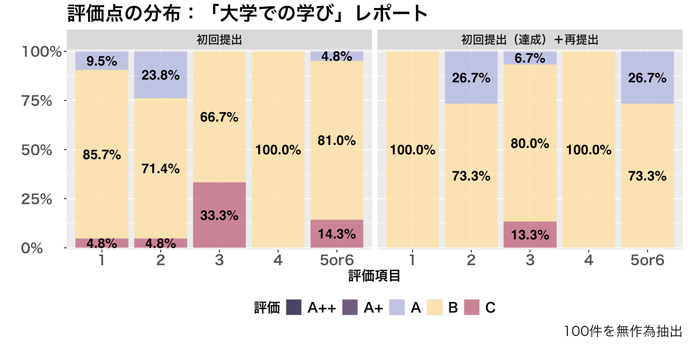
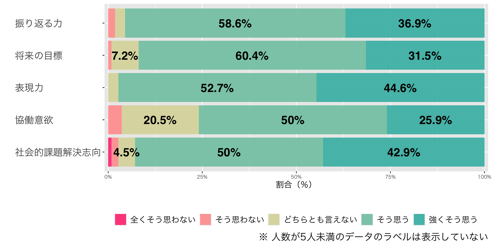
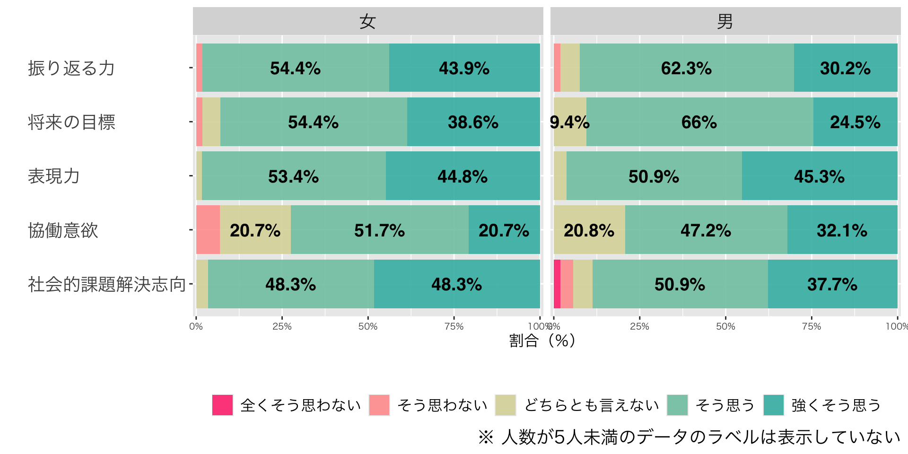
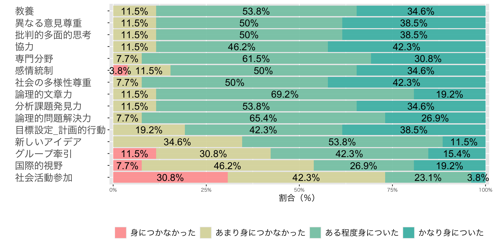
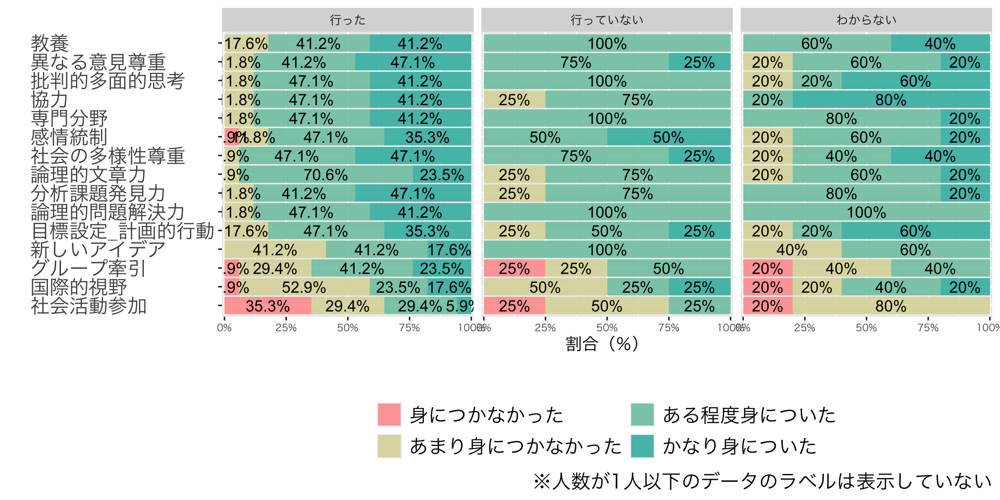
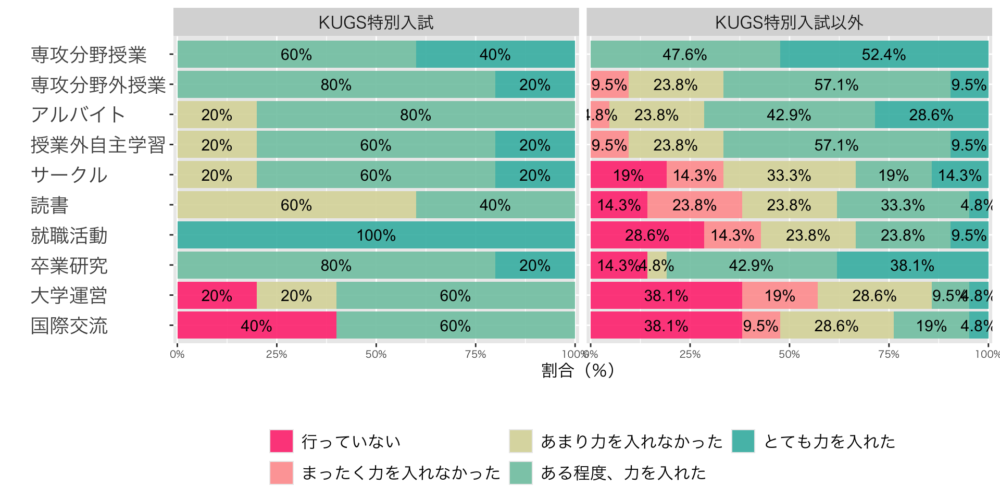
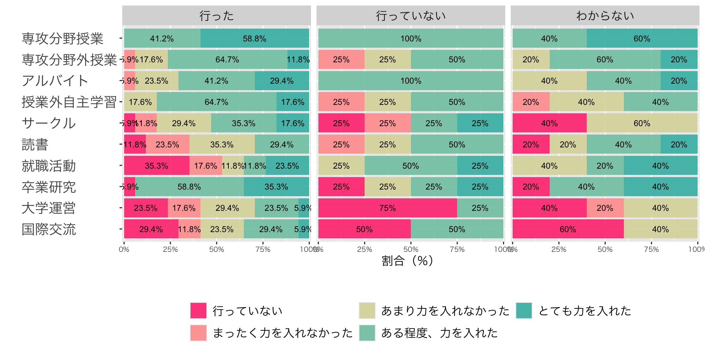
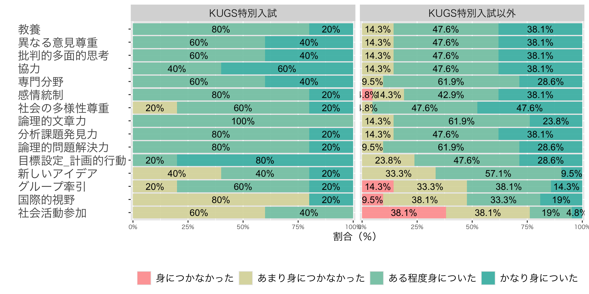
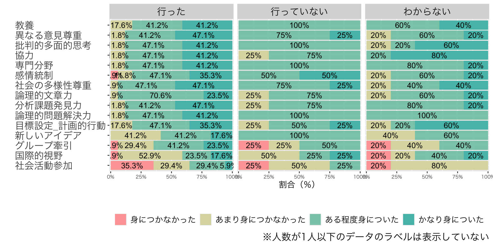

![]()
Overall |
選抜方法 |
p-value 2 |
||
|---|---|---|---|---|
KUGS特別入試 |
KUGS特別入試以外 |
|||
| 回答状況 | 0.017 | |||
| 回答者数 | 26 (1.5%) | 5 (4.9%) | 21 (1.3%) | |
| 未回答者数 | 1,699 (98%) | 98 (95%) | 1,601 (99%) | |
| 1
n (%) |
||||
| 2
Fisher’s exact test |
||||
高校在学中の「学びの転換」的経験が成長実感に与える影響：
高大接続プログラムの取り組みと追跡調査
2025年5月31日
Ⅰ. はじめに
はじめに：問題の所在
高大接続答申（1999年答申；2014年答申）
- 両答申の問題点
- 高大接続改革は大学入試改革と同一視される傾向
- 高校で身に付いた学力を前提に高大接続を構想
- 高校は「「学力の３要素」の確実な育成」を、大学は「「学力の３要素」の確実な育成」を担うべし
- アイデンティティ形成期への配慮不足
はじめに：問題の所在
高等教育研究の知見
学校の教育目標を学力の要素に読み替えるというのは筆者の理解をこえるが、さらに、この「学力の三要素」で小学校から高等教育までの学力像を貫くというのは教育制度論からしても論外（荒井 (2018), 18)。
大学教育と高校教育の異質性は無視され、「学力の三要素」の枠で両者は同一次元で扱われることになった。小学校から高校、大学を貫いて「学力の三要素」を柱に資質・能力の育成を図るという図式だ。机上の空論としか見えない現状は現場、専門家の意見に耳を傾けることなく、政治・行政主導で突っ走ってきたツケとしか云いようがない（荒井 (2018), 21)。
はじめに：問題の所在
高等教育研究の知見
- 初中等教育と高等教育は接続することが前提にない（連続性と非連続性）
- 「学びの転換」を要する
「高校で学んできた事柄をいったんほどき、そのある部分を使いつつ、新たに継続したりしながら必要に合わせて再構築する」（松下 (2010)）
- 自己決定力と他者決定力
- 主体性が大学生活を左右（山田 (2011)）
はじめに：研究概要
- 対象：金沢大学KUGS高大接続プログラム
- 高校在学中に「学びの転換」を促すプログラム
- アイデンティティ形成を促すプログラム
- 分析対象：
- KUGS特別入試合格者入学前意識調査
- 高大接続意識調査
- 目的：
- 大学が提供する育成プログラムによって、成長を実感しやすい対象や条件、あるいは項目は何か
- 含意：
- 大学が高校にどのようなアプローチをとることが有効なのか
Ⅱ. KUGS高大接続プログラムの概要
高大接続プログラム
金沢大学KUGS高大接続プログラム
- 「高校生等を対象として、金沢大学の学びを知り、金沢大学での学びに必要な能力・資質及び意欲を育成することを目的とした教育プログラム」
- 「選別ではなく育成のためのプログラム」
- 注意：修了生はKUGS特別入試の出願資格を得られるが、そのための制度ではない
比較
- 科学者育成のためのプログラム
- 総合型選抜のために実施されるプログラム
- 入試選抜を目的としない育成型の教育プログラム
金沢大学KUGS高大接続プログラム
KUGS高大接続プログラムの修了認定
- レポート（1,200から1,400字）
「大学での学び」個別プログラム
大学への早期入学及び高等学校・大学間の接続の改善に関する協議会
一人一人の能力を伸ばすための、高大連携の促進に向けて
大学においては、以上の取組について、特定分野で卓越した能力を持つ高校生に機会を提供するという視点にとどまらず、専門的な事項について強い意欲や関心を持つ高校生に対し高等教育機関が提供する多彩かつ多様な教育に触れる機会を広く提供するという視点、高校生のニーズに対応した魅力ある科目の設定や授業展開を図るという視点が重要である。この際、高等学校教育の状況を踏まえた取組の実施が不可欠である（文部科学省高等教育局大学振興課大学改革推進室 (2007), 17）
- ※強調は引用者。また、箇条書きで書かれた箇所はあらためた
金沢大学KUGS高大接続プログラム
「選別ではなく育成」を実装する仕組み
- 全員に大学教員からレポートに関する助言的なコメントが送られる
- 評価が「未達成」であっても再提出が可能（繰り返し挑戦できる）
- 大学生基準で評価
- 高校生にとってハードルが高いが、
- しかし、多くの受講生は再提出によって「達成」評価を得る
評価基準
- 金沢大学＜グローバル＞スタンダード（学士課程）＝KUGS
- KUGS高大接続プログラムのレポートはこれに準拠
- ルーブリック《詳細版》
金沢大学KUGS高大接続プログラム
期待される効果
- 金沢大学の学びを知り、そこでの学びに必要な能力・資質及び意欲を育成
- 「学びの転換」を意識し、自分のアイデンティティを問い直す契機に
- 受講生の成長実感については第4節で紹介
金沢大学KUGS高大接続プログラム：レポート評価点の分布
- C評価が「未達成」、それ以外が「達成」を指す
金沢大学KUGS高大接続プログラム：レポート評価点の分布
- C評価が「未達成」、それ以外が「達成」を指す
Ⅲ. 先行研究
先行研究：全国調査
本庄秀明「大学生の学習態度とその規定要因について：全国大学生調査の二次分析の結果から」
- 対象
- 「全国大学生調査」（2007年に東京大学大学院教育学研究科大学経営・政策センターが実施）
- 目的
- 学習態度（主体的学習者と受動的学習者）による学習行動と学習成果の獲得状況の違い
- 学習態度の規定要因
- 知見
- 主体的学習態度がプラスの影響を及ぼす
- 授業方法よりも授業内容自体が重要である
「自己認識の確立に役立つ授業内容は主体的学習態度に結びつきやすい」(本庄 (2022), 99)
先行研究：大阪大学の追跡調査
井ノ上憲司ほか「多面的・総合的入学者選抜の効果検証：卒業年度の学生・教員双方の追跡調査の分析」
Ⅳ. KUGS特別入試合格者入学前意識調査
入学前意識調査：概要
KUGS特別入試合格者入学前意識調査(インターネット調査)
- 対象：KUGS特別入試を受験し合格した者
- 実施期間：毎年2月末から3月末
- 目的
- KUGS特別入試合格者の属性、意識、認識を全般的に調査
- KUGS高大接続プログラムを通じた成長の自己認識
- KUGS高大接続プログラムの理解度
- KUGS特別入試合格者の属性、意識、認識を全般的に調査
- 分析
- 単純集計
- クロス集計（主要なカテゴリー変数に着目）
- クロス集計表と検定
- 相関行列（ヒートマップ）
- 重回帰分析
入学前意識調査：過年度調査との比較
男女比
- 2025年度調査：男子生徒48.2%女子生徒51.1%
- 2023年度調査：男子生徒30%女子生徒70%
出身高校の所在地
- 2025年度調査：北陸3県61.3%；それ以外の都道府県38.7%
- 2023年度調査：と同傾向
一般選抜の受験予定大学（金沢大学）
- 2025年度調査：55.5%
- 2023年度調査：62.4%
入学前意識調査：過年度調査との比較
高校生活で特に意欲的に取り組んだ活動
- 「部活動」を選択
- 2025年度調査：48.9%
- 2023年度調査：42.82%
- 「探究活動」を選択
- 2025年度調査28.1%
- 2023年度調査31.22%
KUGS特別入試を知ったきっかけ
- 「高校の先生」を選択
- 2025年度調査：51.1%
- 2023年度調査：39%
KUGS特別入試に出願した理由（複数選択可）
- 「主体的な学びが評価されるから」を選択
- 2025年度調査：33%
- 2023年度調査：25%
KUGS高大接続プログラムによる成長実感：アンケート項目
KUGS高大接続プログラムの受講、「高校での学び」「大学での学び」レポートの執筆をきっかけに、自身がどの程度成長したと思いますか？
- 自身が何を学んだのかを振り返る力が身についた
- 将来の目標を見つけ、それに向かって努力する力が身についた
- 自身の考えを表現する力が身についた
- 他者と協働することへの意識が高まった
- 社会的課題を解決することへの関心が高まった
KUGS高大接続プログラムによる成長実感：単純集計
高大接続プログラムによる成長実感（クロス集計：性別）
高大接続プログラムによる成長実感（クロス集計：出願理由）
- KUGS 特別入試に出願した理由は何ですか？（複数選択可）
- 選択肢：第一志望だから 受験機会が増えるから 主体的な学びが評価されるから 受験を早く終えたいから その他
- 回答者の33%が「主体的な学びが評価されるから」を選択
高大接続プログラムによる成長実感（クロス集計：探究学習）
- 高校生活で特に意欲的に取り組んだ活動を一つ選んでください。
- 選択肢：部活動 探究学習 科目の勉強（英語、数学など） 委員会活動 その他
- 回答者の28.1%が「探究学習」を選択
高大接続プログラムによる成長実感（クロス集計：高校教員の添削）
- 高校でレポートの添削を受けましたか？
- 選択肢：添削してもらった（56%）意見をもらい参考にした（26.6%） 受けていない（17.4%）
Ⅴ. 高大接続意識調査
高大接続意識調査：概要
- 対象：大学入学後3年11か月が経過した学生（卒業予定の有無を問わない）
- 学内他部局の類似調査は入試区分、大学志望動機、高校時代の経験を尋ねていない
- 実施期間：3月
- 2025年度調査が初年度（試行的調査）
- 目的
- 高校での学習経験・大学入試での選抜方法と、金沢大学における学習経験や大学教育観、成長実感との関係の解明
- 回答率：1.5%（回答者数：26名；対象者数1,728人）
- 分析
- 単純集計
- クロス集計（主要なカテゴリー変数に着目）
高大接続意識調査：回答率（選抜方法別）
- 母集団の比率から期待できる回答率と比較して、特別入試合格者の回答率が有意に高い
高大接続意識調査：大学生活における取り組み
主な知見①：単純集計
- 「専攻分野の授業」に次いで「卒業研究」に力を入れた学生が多かった
- 「専攻分野外の授業」「授業以外の自主学習」についても、多くの学生が力を入れている
- 「国際交流」については「行っていない」という回答が最多
主な知見②：クロス集計
- 被説明変数：
- 大学生活における取り組み
- 説明変数：
- KUGS高大接続プログラムの利用の有無
- 探究学習の経験の有無
- ※性別、出身地などの属性、大学（学類）進学の理由などの意識変数による大きな相違点は見られない
高大接続意識調査：大学生活における取り組み
高大接続意識調査：大学生活における取り組み（入試区分）
高大接続意識調査：大学生活における取り組み（探究学習の経験）
大学生活における成長実感：アンケート項目
- 幅広い教養・知識を身につける
- 異なる意見や立場をふまえて、考えをまとめる
- ものごとを批判的・多面的に考える
- 人と協力しながらものごとを進める
- 専門分野の知識・技術を身につける
- 自分の感情を上手にコントロールする
- 社会や文化の多様性を理解し、尊重する
- 自分の知識や考えを文章で論理的に書く
- 現状を分析し、問題点や課題を発見する
- 筋道を立てて論理的に問題を解決する
- 自分で目標を設定し、計画的に行動する
- 既存の枠にとらわれず、新しい発想やアイデアを出す
- 自ら先頭に立って行動し、グループをまとめる
- 国際的な視野を身につける
- 社会活動（ボランティア、NPO活動などを含む）に積極的に参加する
高大接続意識調査：大学生活を通した成長実感
主な知見①：単純集計
- 大学生活で熱心に取り組んだ取り組みに「専攻分野の授業」に次いで「卒業研究」が挙がった
- 大学生は多くの項目で成長を実感しているが、以下の項目についてはネガティヴ（「あまり身につかなかった」）
- 「自分で目標を設定し、計画的に行動する」
- 「既存の枠にとらわれず、新しい発想やアイデアを出す」
- 「自ら先頭に立って行動し、グループをまとめる」
- 「国際的な視野を身につける」、「社会活動（ボランティア、NPO活動などを含む）に積極的に参加する」
高大接続意識調査：大学生活を通した成長実感
主な知見②：クロス集計
- 被説明変数：
- 大学生活における取り組み
- 大学生活を通した成長実感
- 説明変数：
- KUGS高大接続プログラムの利用の有無
- 探究学習の経験の有無
- ※性別、出身地などの属性、大学（学類）進学の理由などの意識変数による大きな相違点は見られない
KUGS高大接続プログラムとの関係でとりわけ強調しておきたい点は、「自分で目標を設定し、計画的に行動する」という項目への同プログラム利用者、KUGS特別入試入学者のポジティブな回答率の高さである。というのは、このような資質は同プログラムや同入試が受け入れ育成したいと思う学生像と重なるからである。今年度調査は、回答者数が少ないという問題を抱えてはいるが、この点は継続的に調査を重ねていくうえで一つの参照点となるだろう。
高大接続意識調査：大学生活を通した成長実感
高大接続意識調査：大学生活を通した成長実感（入試区分）
高大接続意識調査：大学生活を通した成長実感（探究学習）
Ⅵ. おわりに
おわりに：結果と仮説
結果
成長実感を左右する変数
- KUGS特別入試合格者入学前意識調査：
- 出願理由（「主体的な学びが評価されるから」）
- 高校生活における熱心な取り組みの種類（探究学習）
- 高大接続意識調査：
- KUGS高大接続プログラムの利用の有無
- 探究学習の経験の有無
得られた仮説
- 探究学習を熱心に取り組む者ほど、同プログラムの育成効果が高く、また大学に入学した後も成長を実感しやすい
おわりに：含意
含意
- 高校在学中というより早期の段階で「学びの転換」を図っても、高校生はその目標に近づくことが可能であることが示唆された
- 探究学習への意欲やそこでの経験から、部分的にであれ「学びの転換」を行い、大学で成長するための土台を作っていることが示唆された
- 探究学習に熱心に取り組んだ者ほど、大学において成長を続けるという成長モデル、成長のナラティブを、大学と高校で共有する必要性があるのではないか
おわりに：今後の課題
今後の課題
- KUGS高大接続プログラム受講者や探究活動の経験者以外の学生
- 彼らほどには大学時代に成長を実感できていない
- 大学という空間を、「学びの転換」を果たした者とそうでない者が相互に交流し、刺激しあうような場とするべき（か）
- ➡ どう相互交流の空間を設計し、またその効果を実証するか
参考文献
参考文献
井ノ上憲司., 山下仁司., 大友弘子., 川嶋太津夫., 2022. 多面的・総合的入学者選抜の効果検証：卒業年度の学生・教員双方の追跡調査の分析. 大学入試研究ジャーナル (32), 56–61. https://doi.org/10.57513/dncjournal.32.0_56
山田礼子., 2011. 大学からみた高校との接続：教育接続の課題. 高等教育研究 14, 23–46. https://doi.org/10.32116/jaher.14.0_23
文部科学省高等教育局大学振興課大学改革推進室, 2007. 大学への早期入学及び高等学校・大学間の接続の改善に関する協議会報告書：一人一人の個性を伸ばす教育を目指して. 文部科学省.
本庄秀明., 2022. 大学生の学習態度とその規定要因について：全国大学生調査の二次分析の結果から. 大学評価研究 (21), 93–101.
松下佳代., 2010. 大学における「学びの転換」とは：unlearn概念による検討東北大学高等教育開発推進センター (編), 大学における「学びの転換」と学士課程教育の将来. 東北大学出版会, pp. 5–15.
荒井克弘., 2018. 高大接続改革・再考. 名古屋高等教育研究 18, 5–21. https://doi.org/10.18999/njhe.18.5